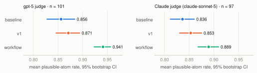
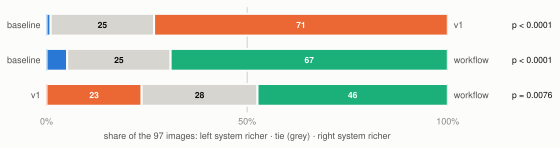
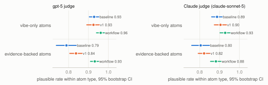
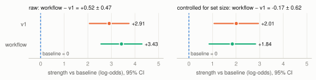

Three ways of writing a vibe representation were compared, all generated by gpt-5: a one-line baseline prompt, the guided v1 prompt, and the workflow, which starts from v1 and revises it with judge feedback. Each representation is split into atomic vibe claims. Plausibility asks whether those claims are true of the image; richness asks, head to head, which system's set of vibes captures more of the image's feeling.


The gpt-5 judge shares its model with the workflow's internal gates and scores the workflow 0.051 above the Claude judge, against about 0.02 for the other systems — likely self-preference, so the Claude-judged numbers are the conservative estimate. Richness is Claude-judged only, for the same reason.
| comparison | plausibility · gpt-5 | plausibility · Claude | richness · Claude (wins–ties–losses) |
|---|---|---|---|
| v1 vs baseline | +0.015 (p 0.40) | +0.017 (p 0.30) | 71–25–1 (p < 0.0001) ✓ |
| workflow vs baseline | +0.085 (p < 0.0001) ✓ | +0.053 (p 0.0005) ✓ | 67–25–5 (p < 0.0001) ✓ |
| workflow vs v1 | +0.070 (p < 0.0001) ✓ | +0.036 (p 0.0064) ✓ | 46–28–23 (p 0.0076) ✓ · size-controlled p 0.60 |
Every batch evaluation runs the same steps: generate a representation from the image, decompose it into atoms, and let LLM judges score them. The workflow closes the loop by feeding two judgements back to the generator.
| version | what it asks for | status |
|---|---|---|
| baseline | One line: “Describe the vibe of this image.” | compared |
| v1 | Flowing prose weaving evidence-backed statements (a named visual cue tied to a vibe) with vibe-only statements. Every cue must carry a vibe; vibes must be grounded and not contradicted by the image; evidence must be a main driver; no speculation. | compared |
| workflow | v1 as the first draft, then a refine prompt: previous text + which claims failed and which vibes are missing. Keep what passed, re-anchor or drop failed claims, add missing aspects in a few words, keep the length. The rubric is never shown to the generator. | compared |
| v2 · dr · rich | v2: five-step JSON self-check. dr: draft, self-question, breadth self-check, rewrite. rich: describe, imagine context, 1–3 vibe phrases. | explored |
The v2 decomposer (used for every reported run) splits a representation into atoms that are affective, atomic, faithful to the original wording and evidence-preserving, then types each atom vibe_only or evidence_backed and extracts its evidence cues and its vibe verbatim. The vibe field is what the richness judge compares. The decomposition-quality judge scored the decomposer versions baseline 0.657 → v1 0.979 → v2 0.982 (101 images; v1/v2 completeness 0.99).
| judge | sees | procedure | score |
|---|---|---|---|
| Decomposition quality | representation + atoms (no image) | Completeness rated 1–5; each atom Good only if affective, atomic, faithful and evidence-preserving. | mean of completeness and 5 × share of Good atoms, ÷ 5 |
| Plausibility | image + atoms | vibe_only: can the vibe be read off the image (any contradicting cue fails it)? evidence_backed, stopping at the first failure: is the cue present, can the vibe be read off the image, is the cue a main driver? | plausible atoms ÷ atoms |
| Richness | image + two systems' bare vibe sets (evidence omitted), as Set A / Set B | List the image's vibe facets; for each set, which it captures and how specifically; compare range first, then specificity. Treat every vibe as true; ignore count, length and position. Winner A, B or tie. Run in both orders: agreement or win + tie is a win; conflict or two ties is a tie. | per pair: wins, ties, losses; sign test on decisive images |
| Breadth (workflow gate) | image + atoms | For ten aspects (subject, interpersonal, object, environment, composition, colour and light, texture, style, activity, time): not applicable / covered / gap. | covered ÷ applicable; the gate rejects on any gap |
A vibe-only atom names a feeling and passes if the image supports it. An evidence-backed atom also names the cue behind it and must pass three checks: the cue is present, the vibe is supported, and the cue is a main driver of the vibe. Evidence-backed atoms fail more often, so a score depends on how well each type is written and on the mix of types.

| baseline | v1 | workflow | |
|---|---|---|---|
| atoms per image | 9.2 | 11.4 | 12.3 |
| share of atoms that are evidence-backed | 42% | 63% | 69% |
| evidence-backed plausible rate · gpt-5 / Claude | 0.79 / 0.80 | 0.84 / 0.82 | 0.93 / 0.88 |
| vibe-only plausible rate · gpt-5 / Claude | 0.93 / 0.89 | 0.93 / 0.90 | 0.96 / 0.93 |
| gpt-5 judge − Claude judge (97 shared images) | +0.018 | +0.023 | +0.051 |
Reading it. v1's guidance raises evidence-backed accuracy (0.79 → 0.84 under gpt-5) and leaves vibe-only accuracy level, but it also moves a fifth of all atoms from the easy type to the hard one. The two effects cancel, which is why v1's overall score barely moves. The workflow keeps v1's evidence-heavy mix and lifts the hard type to 0.93 (0.88 under Claude). The refine step is told which claim failed and why. Of the 150 first-draft failures, 77 were feelings the image works against, which a rewrite drops or qualifies; 62 were mapping failures — a real cue tied to the wrong feeling — which it can fix by naming the cue that actually drives the vibe; 11 named a cue that isn't there.
| over 101 images, gpt-5 throughout | first draft | final |
|---|---|---|
| plausible-atom rate (loop's own judge) | 0.871 | 0.941 |
| implausible atoms per image | 1.49 | 0.70 |
| breadth gaps per image (vibe aspects left unnamed) | 1.38 | 0.23 |
| atoms per image | 11.4 | 12.3 |
The tangle of overhead wires and close, weathered facades create an intimate, slightly nostalgic urban cocoon, more whisper than bustle.
Scattered pedestrians read as soft silhouettes with space between them, and that spacing lets the quiet breathe. Overhead wires and close, weathered facades wrap the view into an intimate, slightly nostalgic urban cocoon.
The judge is told not to count vibes, yet the system ranking follows set size: the workflow lists 12.3 vibes per image, v1 11.4, baseline 9.2 (the workflow's extra vibes likely come from its breadth gate, page 3). To separate the two, the decisive comparisons were fitted with a Bradley–Terry model — logistic regression on pairwise outcomes, the analogue of ANCOVA for wins and losses — with the difference in set size as a covariate:
logit P(x judged richer than y) = (θx − θy) + β · (sizex − sizey)
θ is a system's richness at equal set size (baseline fixed at 0); β is what one extra vibe is worth.

vibeai.eval.richness_control and
cross-checked against statsmodels.| term | raw | controlled for set size |
|---|---|---|
| v1 vs baseline | +2.91 (odds ×18), p < 0.0001 | +2.01 (odds ×7.4), p < 0.0001 |
| workflow vs baseline | +3.43 (odds ×31), p < 0.0001 | +1.84 (odds ×6.3), p = 0.0002 |
| workflow − v1 | +0.52 (odds ×1.7), p = 0.030 | −0.17 (odds ×0.85), p = 0.60 |
| each extra vibe (β) | — | +0.72 (odds ×2.1), p < 0.0001 |
Reading it. v1 and the workflow beat baseline even at equal set size — about 6–7× the odds of being judged richer — so that gap is not length. The workflow's gain over v1 disappears once size is in the model. That does not prove the workflow is no richer: if its extra vibes really reach new facets, part of a true advantage runs through size and the control removes it too. What it does say is that the data cannot tell "covers more" from "lists more", and with each extra vibe roughly doubling the odds of a win, a length bias in the judge is a live possibility. A blind human comparison on size-mismatched pairs is what would settle it.
| diagnostic | value | meaning |
|---|---|---|
| order consistency | 69.8% (72 / 71 / 66% by pair) | share of comparisons whose two orders reached the same verdict; the rest are scored as ties |
| Set A win rate, single calls | 195 / 530 = 36.8%, p < 0.0001 | the judge prefers whichever set it reads second; judging both orders cancels this per comparison |
| calls · errors · cost | 582 · 0 · ≈ $6 | 2 orders × 3 pairs × 97 images; ~2,000 input and ~580 output tokens per call |
A human annotator labelled the same items as the judge in a purpose-built web app; agreement is Cohen's κ, which discounts the agreement expected by chance.
| judge · labels | items | κ | raw agreement | reading |
|---|---|---|---|---|
| Plausibility · atom plausible? | 268 atoms / 30 images | 0.817 | 95.9% | almost perfect |
| ↳ evidence_backed atoms | 102 | 0.888 | 96.1% | |
| ↳ vibe_only atoms | 166 | 0.673 | 95.8% | substantial |
| Decomposition · completeness (1–5) | 30 images | 0.696 linear-wtd | 83.3% exact | substantial |
| Decomposition · atom Good/Bad | 339 atoms | 0.644 | 82.3% | substantial |
| ↳ fidelity · evidence preservation | 339 | 0.626 · 0.594 | 82.6% · 79.6% | |
| ↳ atomicity · affectiveness | 339 | 0.305 · 0.000 | 96.2% · 99.7% | base-rate effect* |
| Richness · which set is richer? | — | — | — | not yet validated |
results/significance/). Richness:
exact two-sided binomial sign test on decisive comparisons, same Bonferroni threshold.